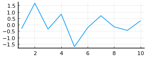
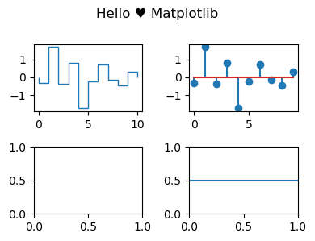

2022-01-04 • Hello Julia
Contents
2022-01-04 • Hello Julia¶
1
1
Time to evaluate this code cell after kernel restart: 14 à 21 seconds.
So restarting kernel is to be avoided..
Also note, starting julia interpreter in terminal is faster, less than a second.
Plots¶
@time using Plots
9.133000 seconds (8.27 M allocations: 572.587 MiB, 2.80% gc time, 8.71% compilation time)
gr()
Plots.GRBackend()
default(legend=:none, size=(300,120))
using Random
Random.seed!(2022)
x = randn(10);
@time plot(x)
0.000854 seconds (1.29 k allocations: 74.836 KiB)
@time pyplot()
0.000031 seconds (6 allocations: 576 bytes)
Plots.PyPlotBackend()
Can set default with ENV["PLOTS_DEFAULT_BACKEND"] = "pyplot"
p = plot(x)

import PyPlot: matplotlib, subplots, version
fig, ax = subplots(2,2, figsize=(4,3))
fig.suptitle("Hello ♥ Matplotlib")
fig.tight_layout()
ax[1,1].stairs(x)
ax[1,2].stem(x)
ax[2,2].axhline(0.5)

PyObject <matplotlib.lines.Line2D object at 0x0000000096C6FD00>
fig.dpi_scale_trans
PyObject <matplotlib.transforms.Affine2D object at 0x0000000084780520>
Amazing. We have access to the entirety of matplotlib (and an up-to-date version too).
print("mpl version $version")
mpl version 3.5.1
Units¶
@time using Unitful, UnitfulRecipes
0.397959 seconds (710.74 k allocations: 45.410 MiB, 0.77% compilation time)
using Unitful.DefaultSymbols # m, cm, …
ENV["UNITFUL_FANCY_EXPONENTS"] = true
true
x = 7cm/s
7 cm s⁻¹
typeof(x)
Quantity{Int64, 𝐋 𝐓⁻¹, Unitful.FreeUnits{(cm, s⁻¹), 𝐋 𝐓⁻¹, nothing}}
[1.0m, 2.0*cm, 3.0 * km]
3-element Vector{Quantity{Float64, 𝐋, Unitful.FreeUnits{(m,), 𝐋, nothing}}}:
1.0 m
0.02 m
3000.0 m
[2:5;] * kg
4-element Vector{Quantity{Int64, 𝐌, Unitful.FreeUnits{(kg,), 𝐌, nothing}}}:
2 kg
3 kg
4 kg
5 kg
Numeric processing performance of unitful arrays¶
using BenchmarkTools
z, q = randn(2000); randn(2000);
zz, qq = z*kg, q*mV/s;
@benchmark zz ./ qq
BenchmarkTools.Trial: 10000 samples with 9 evaluations.
Range (min … max): 1.844 μs … 253.278 μs ┊ GC (min … max): 0.00% … 95.76%
Time (median): 3.267 μs ┊ GC (median): 0.00%
Time (mean ± σ): 4.136 μs ± 11.771 μs ┊ GC (mean ± σ): 15.04% ± 5.24%
▂ █▃ ▁
▂▃▃▄█▇▇▇██▇▆██▇▅▅▆█▇▅▄▃▂▂▂▂▁▁▁▁▁▁▁▁▁▁▁▁▁▁▁▁▁▁▁▁▁▁▁▁▁▁▁▁▁▁▁▁ ▂
1.84 μs Histogram: frequency by time 9.41 μs <
Memory estimate: 15.81 KiB, allocs estimate: 3.
@benchmark z ./ q
BenchmarkTools.Trial: 10000 samples with 9 evaluations.
Range (min … max): 2.744 μs … 794.422 μs ┊ GC (min … max): 0.00% … 98.60%
Time (median): 4.289 μs ┊ GC (median): 0.00%
Time (mean ± σ): 5.606 μs ± 17.058 μs ┊ GC (mean ± σ): 14.77% ± 5.25%
▆▂ ▇ ▃█▂▃
██▇█▅▆█████▇▄▃▃▄▄▄▄▃▃▂▂▂▁▁▁▁▁▂▁▁▁▁▁▁▁▁▁▁▁▁▁▁▁▁▁▁▁▁▁▁▁▁▁▁▁▁▁ ▂
2.74 μs Histogram: frequency by time 14.6 μs <
Memory estimate: 15.81 KiB, allocs estimate: 3.
Unitful array math just as fast as plain float array math 🤯
Thanks to it doing the unit calculations at compile time. Gives verbose types, but fast speedy numerics.
Array wrapper¶
using Unitful
import Unitful: kg, s, ms, mV, Hz
module Shorthands
const Float = Float64
const Optional{T} = Union{T,Nothing} where T
const mime_multiline = MIME("text/plain")
export Float, Optional, mime_multiline
end
using .Shorthands
WARNING: replacing module Shorthands.
"""Add `IOContext` settings to an `IO` object if they have not been set yet."""
function add_defaults(io::IO, defaults::Pair...)::IO
settings = merge(Dict(defaults), IOContext(io).dict)
IOContext(io, settings...)
end;
Base.show(io::IO, x::Float) =
Base.@invoke show(add_defaults(io, :compact=>true)::IO, x::Union{Float16,Float32,Float64})
# this works (i.e. is non-recursive) because we only define it for Float64, not the Union
Base.show(io::IO, ::MIME"text/plain", x::Quantity) =
Base.@invoke show(add_defaults(io, :fancy_exponent=>true)::IO, x::Quantity)
# this works because Unitful defined a `show` for both with and without mime; we invoke the without here.
0.1*3 * mV/ms
0.3 mV ms⁻¹
#=
`showarg` is called by `summary`, which is in turn called by `show`.
It is the "Vector{ElType}" part in "300-element Vector{Eltype}: …"
=#
"""Show summary of the type of a unitful array."""
function Base.showarg(io::IO, x::AbstractArray{<:Quantity}, toplevel)
print(io, x isa Vector ? "Vector" :
x isa Matrix ? "Matrix" :
nameof(typeof(x)))
el = first(x)
io = add_defaults(io, :fancy_exponent=>true) # m² instead of m^2
print(io, "{", typeof(el.val), ", ", unit(el), "}")
# if integrating in Unitful, a todo: handle heterogeneous arrays.
end;
function Base.show(io::IO, ::MIME"text/plain", x::AbstractArray{<:Quantity})
summary(io, x)
println(io, ":")
Base.print_array(io, ustrip(x))
end
rand(Int8, 4)kg/s
4-element Vector{Int8, kg s⁻¹}:
20
-39
-115
91
# use ctrl-enter
module S
import Unitful: Time, Quantity, unit, ustrip, numtype
using Base.Iterators
using PyFormattedStrings
using ..Shorthands
using .Main
"""An array where one dimension represents evenly spaced samples in time."""
struct Signal{T,N} <: AbstractArray{T,N}
data::AbstractArray{T,N}
"""Time between two samples. Reciprocal of sampling frequency."""
Δt::Time
"""Optional description of the values in `data`. E.g. "Membrane potential"."""
description::Optional{AbstractString}
"""Time dimension of the array. Defaults to `1`."""
tdim::Int
end
# Allow `description` and `tdim` as optional keywords.
# non-todo: macro this (`Base.@kwdef` or Parameters.jl no good: can't have mix of kw and non-kw).
Signal(d, Δt, description; tdim=1) = Signal(d, Δt, description, tdim)
Signal(d, Δt; description=nothing, tdim=1) = Signal(d, Δt, description, tdim)
Base.size(x::Signal) = size(x.data)
Base.getindex(x::Signal{T,N}, I::Vararg{Int, N}) where {T,N} = x.data[I...]
Base.setindex!(x::Signal{T,N}, v, I::Vararg{Int, N}) where {T,N} = (x.data[I...] = v)
duration(x::Signal) = size(x, x.tdim) * x.Δt
function Base.summary(io::IO, x::Signal)
print(io, Base.dims2string(size(x)), ' ')
isnothing(x.description) || print(io, '"', x.description, '"', ' ')
Base.showarg(io, x, true)
print(io, ", duration ", duration(x))
end
function Base.show(io::IO, ::MIME"text/plain", x::Signal)
print(io, Base.dims2string(size(x)))
isnothing(x.description) || print(io, ' ', '"', x.description, '"')
println(io, " Signal:\n")
el = first(x)
isunitful = (el isa Quantity)
isunitful && (io = Main.add_defaults(io, :fancy_exponent=>true)) # m² instead of m^2
Base.print_array(io, isunitful ? ustrip(x) : x)
println(io, "\n")
printrow(key, val) = println(io, lpad(key, 9), ": ", val)
isunitful && printrow("units", unit(el))
printrow("duration", f"{duration(x)} (Δt: {x.Δt})")
printrow("dtype", isunitful ? typeof(el.val) : typeof(el))
end
end;
WARNING: replacing module S.
# use ctrl-enter
x = S.Signal(randn(2000)*mV/ms, 0.1*ms, "Membrane potential")
x
2000-element "Membrane potential" Signal:
-0.53508
-1.05966
0.200328
-2.70706
-0.538937
-0.63484
0.507051
0.627075
-0.663051
0.662328
-1.96189
0.441242
0.408328
⋮
-0.222719
-0.934877
0.431609
0.0725057
-1.36245
2.13669
1.75368
1.04932
-0.999424
0.154111
-1.05527
-0.999598
units: mV ms⁻¹
duration: 200.0 ms (Δt: 0.1 ms)
dtype: Float64
print(summary(x))
2000-element "Membrane potential" Signal(Float64, mV ms⁻¹), duration 200.0 ms
y = S.Signal(randn(3,90), 0.5ms, tdim=2)
3×90 Signal:
0.119297 0.109232 -0.380801 … -0.350973 1.73712 -0.798376
-0.307181 -0.422936 0.912106 0.975326 -1.27965 1.26854
-0.502739 1.14168 0.899721 -0.52512 0.583211 1.34904
duration: 45.0 ms (Δt: 0.5 ms)
dtype: Float64
typeof(y)
Main.S.Signal{Float64, 2}
typeof(x)
Main.S.Signal{Quantity{Float64, 𝐋^2 𝐌 𝐈^-1 𝐓^-4, Unitful.FreeUnits{(ms^-1, mV), 𝐋^2 𝐌 𝐈^-1 𝐓^-4, nothing}}, 1}
import Unitful: Voltage, Time, Current
Voltage
Union{Quantity{T, 𝐋^2 𝐌 𝐈^-1 𝐓^-3, U}, Level{L, S, Quantity{T, 𝐋^2 𝐌 𝐈^-1 𝐓^-3, U}} where {L, S}} where {T, U}
Time
Union{Quantity{T, 𝐓, U}, Level{L, S, Quantity{T, 𝐓, U}} where {L, S}} where {T, U}